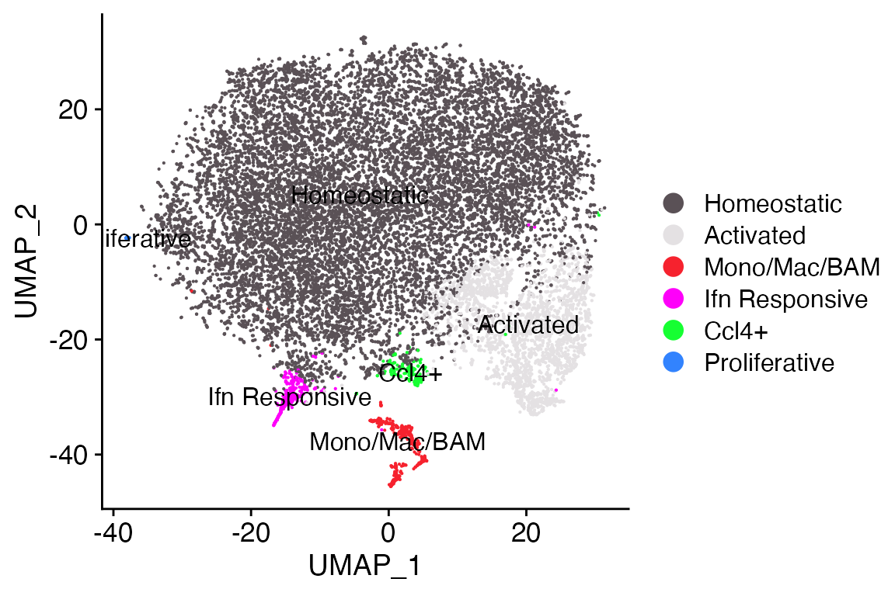
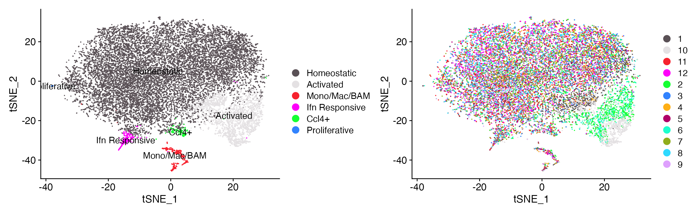
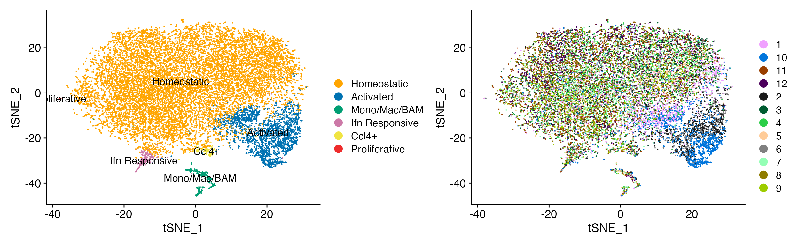
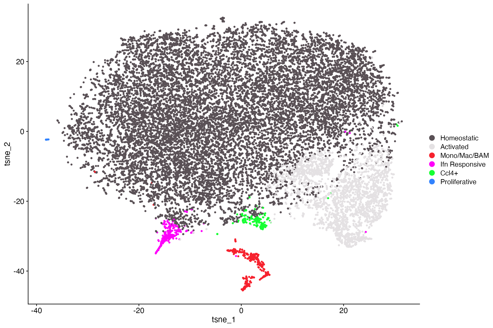
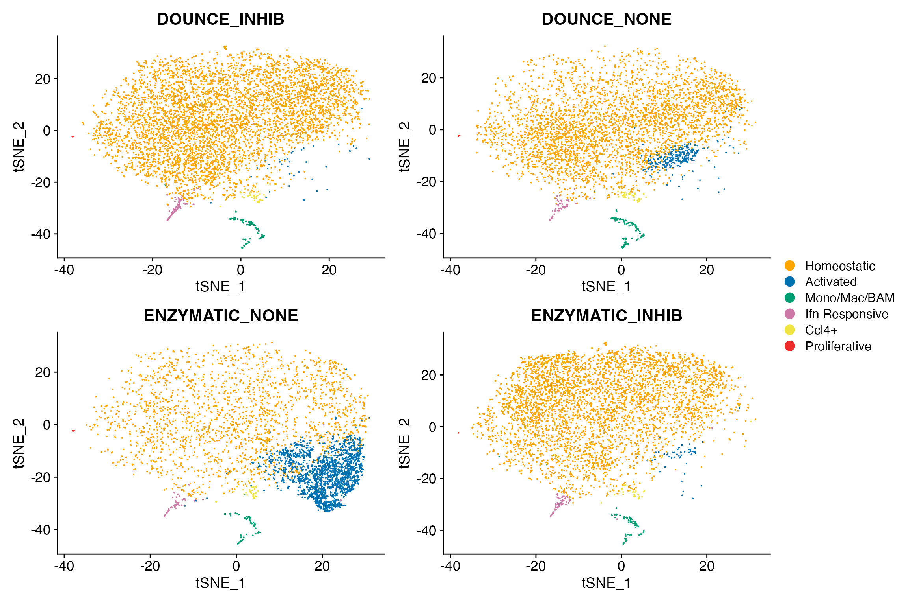
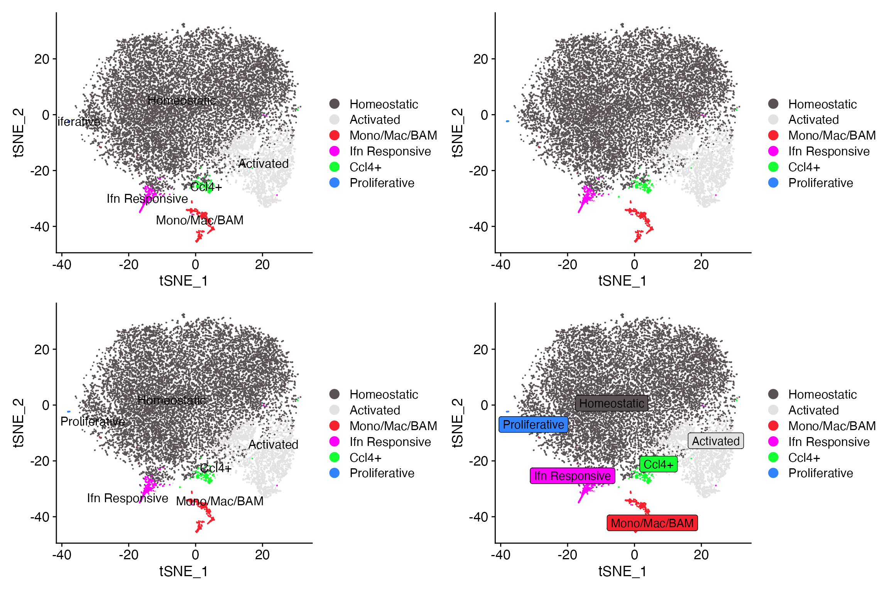
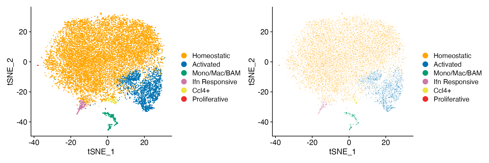
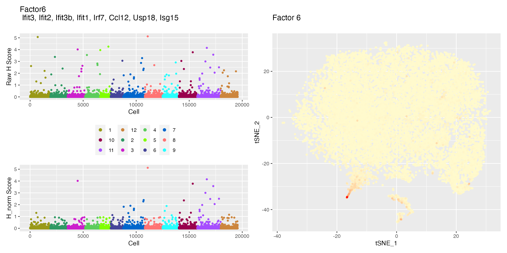
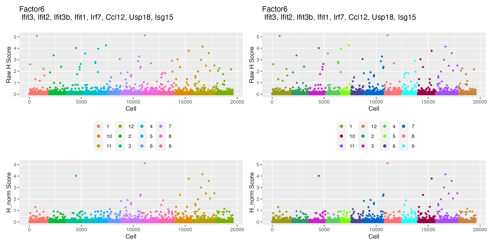
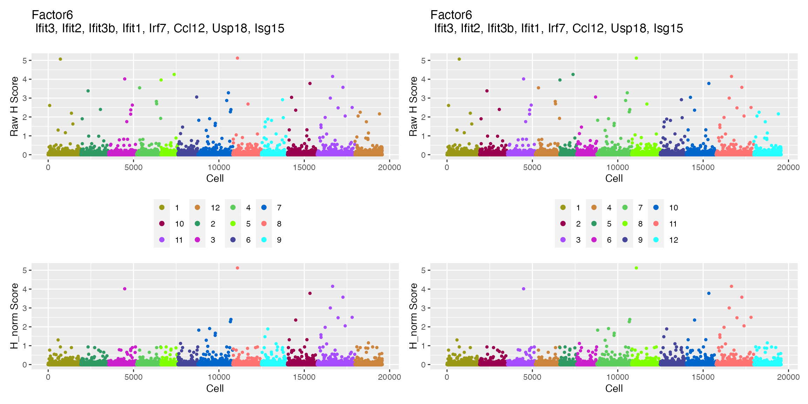

LIGER Plotting & Functionality
Compiled: November 20, 2023
Source:vignettes/articles/LIGER_Functions.Rmd
LIGER_Functions.RmdInteractivity with LIGER Objects
While the majority of scCustomize’s current functionality is with Seurat Objects there are a few functions for working with LIGER objects too.
For this tutorial, I will be utilizing microglia data from Marsh et al., 2022 (Nature Neuroscience) which I have converted to LIGER object.
# Load Packages
library(ggplot2)
library(dplyr)
library(magrittr)
library(patchwork)
library(Seurat)
library(rliger)
library(scCustomize)
library(qs)
# read object
marsh_micro <- qread("assets/marsh_2020_micro.qs")
# Convert to liger
marsh_liger <- rliger::seuratToLiger(objects = marsh_micro, combined.seurat = TRUE, use.idents = T,
use.tsne = T, meta.var = "orig.ident", remove.missing = FALSE)
# Add meta data to LIGER \@cell.data slot
marsh_liger@cell.data$Transcription <- marsh_micro@meta.data$Transcription
marsh_liger@cell.data$Method <- marsh_micro@meta.data$Method
marsh_liger@cell.data$Batch <- marsh_micro@meta.data$Batch
marsh_liger@cell.data$Transcription_Method <- marsh_micro@meta.data$Transcription_MethodDimensionality Reduction Plotting
scCustomize contains new LIGER plotting function
DimPlot_LIGER() that both adds functionality not present in
LIGER package and provides function for plotting that is easier to use
for those more familiar with Seurat’s DimPlot()
DimPlot_LIGER(liger_object = marsh_liger)
As you can see we get plot that looks very similar to thought
generated by DimPlot_scCustom() or
Seurat::DimPlot().
/* IMPORTANT: AXES LABELS /*
Unfortunately, the liger/rliger package does not properly store the name of the dimensionality reduction technique used and labels all plots with tSNE1/tSNE2 or dr1/dr2.
DimPlot_LIGER() solves this by providing extra parameter
in the function that can be used to set labels. The first time you use
DimPlot_LIGER in R session it will print a one-time message
alerting you to the fact that this parameter exists and is set to “UMAP”
by default (as it seems to be most commonly used method currently).
However, this analysis object used tSNE so let’s change that parameter.
DimPlot_LIGER(liger_object = marsh_liger, reduction_label = "tSNE")Optional functionality/Parameters
DimPlot_LIGER adds a number of options not present in
liger plotting and modifies naming/functionality of others to be more
in-line with Seurat for ease of use.
Plot combination
DimPlot_LIGER(liger_object = marsh_liger, reduction_label = "tSNE", combination = T)
User can specify different color palettes for each plot
clu_color <- ColorBlind_Pal()
sample_color <- DiscretePalette_scCustomize(num_colors = 12, palette = "alphabet")
DimPlot_LIGER(liger_object = marsh_liger, reduction_label = "tSNE", combination = T, colors_use_cluster = clu_color,
colors_use_meta = sample_color)
Grouping and Splitting Plots
DimPlot_LIGER supports grouping and splitting plots by
meta data variables or cluster and will return patchwork layout
DimPlot_LIGER(liger_object = marsh_liger, reduction_label = "tSNE", group_by = "Transcription_Method",
colors_use_meta = JCO_Four())
DimPlot_LIGER(liger_object = marsh_liger, reduction_label = "tSNE", group_by = "Cluster", split_by = "Transcription_Method",
label = FALSE)
Cluster Label Modification
DimPlot_LIGER supports many different modifications of
cluster labels. NOTE: labeling is only supported when plotting by
cluster.
-
labellogical. Whether to label clusters on plot. -
label_sizeChange label text size. -
label_repellogical. Whether to repel labels. -
label_boxlogical. Whether to place box around label. -
label_colorchange label text color.
DimPlot_LIGER(liger_object = marsh_liger, reduction_label = "tSNE")
DimPlot_LIGER(liger_object = marsh_liger, reduction_label = "tSNE", label = FALSE)
DimPlot_LIGER(liger_object = marsh_liger, reduction_label = "tSNE", label_repel = TRUE)
DimPlot_LIGER(liger_object = marsh_liger, reduction_label = "tSNE", label_repel = TRUE, label_box = TRUE,
label_size = 3)
Raster Points
DimPlot_LIGER() also supports point rasterization
utilizing scattermore
package. Axes, labels, and legends will remain in vector
form.
DimPlot_LIGER(liger_object = marsh_liger, reduction_label = "tSNE", raster = FALSE, label = FALSE)
DimPlot_LIGER(liger_object = marsh_liger, reduction_label = "tSNE", raster = TRUE, label = FALSE)
Restore ggplot2 default color scheme
If you would like to restore ggplot2 default color scheme but
maintain the rest of the aesthetics of DimPlot_LIGER simply
set parameter ggplot_default_colors = TRUE.
DimPlot_LIGER(liger_object = marsh_liger, reduction_label = "tSNE", ggplot_default_colors = TRUE)
Customized plotFactors Functionality
NOTE: For this example as “marsh_liger” was not originally a
LIGER analyzed object it has no factors. So I ran a basic LIGER pipeline
(with no specific parameters to demonstrate functionality of
Top_Genes_Factor)
scCustomize contains function plotFactors_scCustom()
which expands the functionality and customizes the visualizes of LIGER’s
plotFactors() function.
Plots Created
plotFactors_scCustom returns two different plots for
each iNMF factor. First, is plot of the factor loadings for each cell,
grouped by dataset. The second is visualization of the factor loading on
the dimensionality reduction coordinates.
p1 <- returned_plots[[1]][[6]]
p2 <- returned_plots[[2]][[6]]
wrap_plots(p1, p2, ncol = 2)
Additional Plot Save/Return Functionality
plotFactors_scCustom has a number of additional
parameters that expand the functionality of
plotFactors.
-
save_plotsand/orreturn_plotslogical parameters to either return plots to assigned variable in environment or save the plots to PDF (or both). -
file_pathandfile_nameoptional parameters required if saving plots to PDF. -
rasterwhether or not to raster the points in both plots. Significantly reduced PDF file size and speed of plotting.
Additional Factor Plot Functionality
plotFactors_scCustom has a number of additional
parameters that significantly expand the visualization options of
plotFactors.
-
colors_use_factorscan be used to color the datasets in the factor loading plot. Must be vector equal to or greater than number of datasets in object. By default uses the “varibow” palette fromDiscretePalette_scCustominstead of default ggplot2 hue palette.
-
ggplot_default_colorsparameter can be specified if you would like to return this plot to using the ggplot2/hue palette.

-
reorder_datasetsnew order to plot datasets in. By default plots in factor level order from the @cell.data slot but this can be reordered just for plotting without changing the underlying object.

Added Dimensionality Reduction Functionality
-
colors_use_dimreduccan be used to define colors for dimensionality reduction plot. Can either be vector or two colors to be used to create gradient or a define gradient. -
orderwhether or not to reorder the points so that higher loading points are plotted on top of lower loading cells (avoids cell hiding). Default is FALSE.
/* IMPORTANT: AXES LABELS /*
Unfortunately, the liger/rliger package does not properly store the name of the dimensionality reduction technique used and labels all plots with tSNE1/tSNE2 or dr1/dr2.
plotFactors_scCustom solves this by providing extra
parameter: reduction_label in the function that can be used
to set labels. The first time you use plotFactors_scCustom
in R session it will print a one-time message alerting you to the fact
that this parameter exists and is set to “UMAP” by default (as it seems
to be most commonly used method currently).
Extract Top Loading Genes per Factor
Following plotting with plotFactors_scCustom it can
sometimes be helpful to pull list of top loading genes for particular
factor. Top_Genes_Factor provides quick function to extract
the list of genes that loads highly on particular iNMF factor.
NOTE: This function simply extracts top loading genes in order from
given factor. It does not assess whether that number of genes is
significant, etc.
top20_factor6 <- Top_Genes_Factor(liger_object = marsh_liger, liger_factor = 6, num_genes = 20)
head(top20_factor6, 5)## [1] "Ifit3" "Ifit2" "Ifit3b" "Ifit1" "Irf7"Convert LIGER to Seurat
The liger/rliger package already contains a function
seuratToLiger() to convert LIGER objects to Seurat Objects.
However, during this transfer a few things have issues crop up:
- All meta data except the “dataset” column from liger_object@cell.data is lost.
- Seurat dimensionality reduction is set to tSNE regardless of method used in LIGER analysis
- Seurat assay name not specified
scCustomize contains modified version of this function named
Liger_to_Seurat() that solves these issues with 3 extra
parameters:
-
keep_metalogical. Whether to keep meta data from the @cell.data slot in LIGER object. Default is TRUE. -
reduction_labelName of dimensionality reduction technique used (e.g., tSNE, UMAP, etc). Ensures dim names are set correctly in Seurat object. -
seurat_assayName of assay to use for data in Seurat object. Default is “RNA”.
seurat_obj <- Liger_to_Seurat(liger_object = liger_object, reduction_label = "UMAP")Add Mitochondrial & Ribosomal Percentages
For more information on adding mitochondrial and ribosomal count
percentages to LIGER objects see General
Utilities and Helpers Vignette for information on
Add_Mito_Ribo_LIGER which is analogous to
Add_Mito_Ribo_Seurat.
Variable Gene Selection
By default when selecting highly variable genes in LIGER using
rliger::selectGenes() LIGER performs gene selection across
all datasets in the object and then can either take the union or
intersection of those lists (default is union). However, sometimes for
analysis you may want to select highly variable genes from all data
combined.
scCustomize provides the function
Variable_Features_ALL_LIGER() that will do just that and
returns the variable genes list to the @var.genes slot of
original LIGER object.
NOTE: This function creates a temporary LIGER object by merging all
of the matrices present in original object and then running variable
gene selection. Therefore, while running the function it will use
significant memory resources (equivalent to size of original
object).
# Select highly variable genes based on threshold
marsh_liger <- Variable_Features_ALL_LIGER(liger_object = marsh_liger, var.thresh = 0.3)
# Select based on specific number of variable genes
marsh_liger <- Variable_Features_ALL_LIGER(liger_object = marsh_liger, num_genes = 2000)Gene Utilities
As discussed in helpers
vignette, the Gene_Present() function can be used to
check if list of genes are present in a LIGER object.
By default this will query all datasets in the object to create unified gene list and check input gene list against that list.
gene_input_list <- c("P2ry12", "Fcrls", "Aif1")
genes_present <- Gene_Present(data = marsh_liger, gene_list = gene_input_list)However you can check individual datasets within object by supplying
those matrices to the data parameter.
gene_input_list <- c("P2ry12", "Fcrls", "Aif1")
genes_present <- Gene_Present(data = marsh_liger@raw.data[[1]], gene_list = gene_input_list)